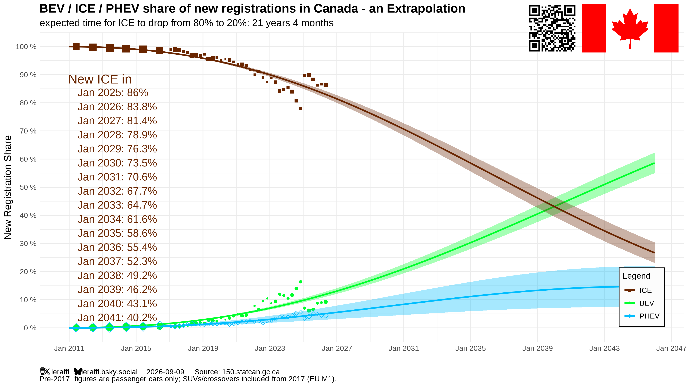
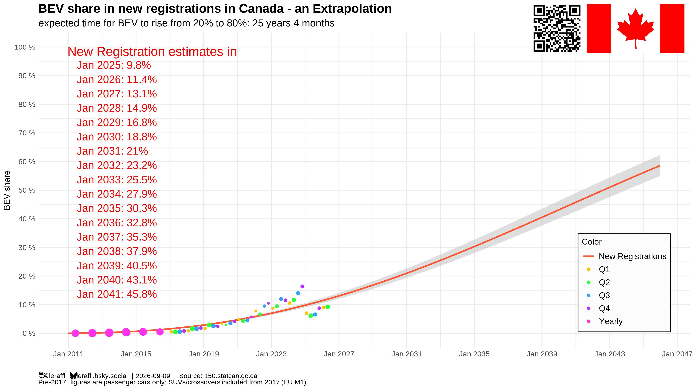
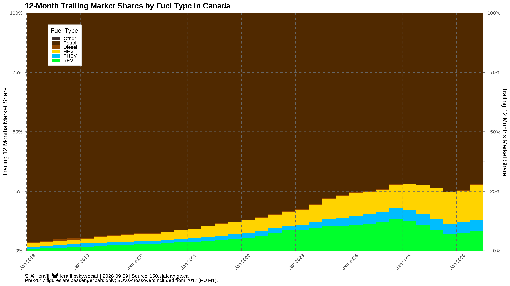
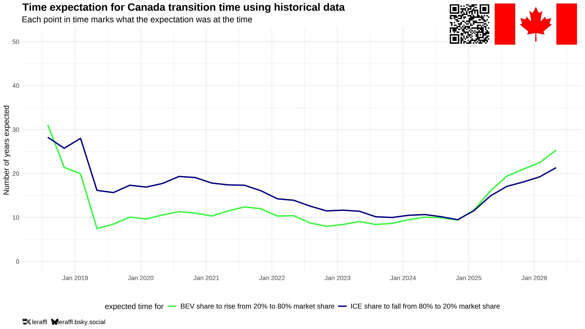

Canada
Data through May 2026 · curve fitted 2026-09-09 API
Who gained, who lost
Lost share: Battery electric 2.4. Gained: Full hybrid 2.5. In percentage points of all new registrations.
Share of new registrations in the last four quarters (Jun 2025 to May 2026) against the four quarters before (Jun 2024 to May 2025). The changes add up to zero: what one row gains, the others lose. A row appears only where the source fills that column in every period of both windows; everything else is in the last row.
The latest periods
| Period | All registrations | BEV | BEV % | PHEV % | HEV % | All other % |
|---|---|---|---|---|---|---|
| Quarter to May 2026 | 416,491 | 38,527 | 9.3 | 4.4 | 18.0 | 68.4 |
| Quarter to Feb 2026 | 301,872 | 27,193 | 9.0 | 4.4 | 14.5 | 72.1 |
| Quarter to Nov 2025 | 316,262 | 27,794 | 8.8 | 4.9 | 12.5 | 73.8 |
| Quarter to Aug 2025 | 365,426 | 24,090 | 6.6 | 5.0 | 13.0 | 75.3 |
| Quarter to May 2025 | 412,529 | 25,360 | 6.1 | 4.1 | 12.9 | 76.9 |
| Quarter to Feb 2025 | 321,831 | 22,679 | 7.0 | 3.3 | 14.2 | 75.5 |
| Quarter to Nov 2024 | 340,627 | 55,847 | 16.4 | 5.6 | 11.7 | 66.3 |
| Quarter to Aug 2024 | 367,336 | 51,555 | 14.0 | 5.2 | 10.1 | 70.6 |
| Quarter to May 2024 | 390,016 | 45,530 | 11.7 | 4.3 | 8.4 | 75.6 |
| Quarter to Feb 2024 | 320,998 | 33,882 | 10.6 | 3.9 | 9.2 | 76.4 |
| Quarter to Nov 2023 | 326,185 | 37,657 | 11.5 | 3.8 | 9.5 | 75.2 |
| Quarter to Aug 2023 | 343,927 | 41,225 | 12.0 | 3.9 | 10.1 | 74.1 |
| Quarter to May 2023 | 355,908 | 33,722 | 9.5 | 3.2 | 9.6 | 77.7 |
Shares are the column divided by the source's own total. The last column is what remains after the columns to its left. Newest first.
The fitted curve
| BEV share | Curve reaches it in |
|---|---|
| 10 % | 2025 |
| 20 % | 2030 |
| 50 % | 2042 |
| 80 % | 2055 |
| 90 % | 2063 |
The fit is provisional: its 80 % date moved by 8 years across recent re-fits. No confidence interval is shown: none can be stated reliably for this series (too few rows). How the intervals are calculated.
The gallery fits a generalized Weibull curve to the BEV share of each period: share(t) = 1 − exp(v1 · (t − t0)v2), t in calendar years. For Canada: v1 = −1.349 × 10−4, v2 = 2.452, t0 = 2010, fitted through June 2026, model run 2026-09-09. This is the project's own model, not an official forecast. A policy change or a stall is not in it.
The gallery charts


Combustion, battery electric and hybrid curves

BEV share with the fitted curve

Market split, trailing twelve months

Time to reach each BEV shareRendered 2026-09-09 from data through Jun 2026. Charts are CC BY 4.0; open one for the full size.
Where the numbers come from
Quarterly new-vehicle registrations for Canada from Statistics Canada's Web Data Service (cube 20-10-0025).
Raw source
Go and check the numbers yourself:
150.statcan.gc.ca — StatCan WDS cube 20-10-0025 ↗
How the data flows
Each new or changed month re-renders the country. Shares are read from the CSV as column ÷ TOTAL and grouped into three curves. A generalized Weibull S-curve is fitted to the BEV and the ICE share, and the charts, the fitted parameters, the twelve-month totals and the uncertainty bands are rewritten.
- BEVBEV
- PHEV or EREV (plug-in hybrids, range extenders)Does the source split plug-ins from other hybrids?
- yesPHEV
- no — one combined hybrid figure (parked in HEV)ICEthe PHEV curve is left out, never drawn at zero
- HEV or MHEV (full and mild hybrids — no plug)ICE
- petrol, diesel, gas, flex-fuel, othersICE
Definitions & scope
| Acquisition | API — pulled from a structured API / query endpoint |
|---|---|
| Vehicle scope | Whole = passenger cars + multi-purpose vehicles (EU M1); stored at the quarter's middle month. |
| HEV (full hybrids) | split into its own column |
| Auth | none |
Variants
Each variant is its own series with its own CSV. Not every variant is charted in the gallery — the CSV is the authoritative record either way. BEV share and volume cover the last twelve months of each series.
| Variant | What it counts | Held | BEV share | Registrations | Raw data |
|---|---|---|---|---|---|
| Whole | Passenger cars + multi-purpose vehicles (SUVs/crossovers) = EU class M1. | 2011-06 – 2026-05 44 rows | 8.4 % | 1.40 M | data/Canada.csv |
| Pickups | Pickup trucks, GVWR up to 14,000 lb — Canada-specific, not EU N1. | 2017-02 – 2026-05 38 rows | 2.5 % | 358,478 | data/Canada_Pickups.csv |
| Vans | Minivans + cargo vans — Canada-specific, mixes M1 and N1. | 2017-02 – 2026-05 38 rows | 4.5 % | 85,774 | data/Canada_Vans.csv |
History we hold
Every bar is the span actually present in our stored CSV — breaks in a bar are real gaps in the series, not rendering. Cadence is shown on the right.
Whole 2011-06–2026-05 (44 rows), Pickups 2017-02–2026-05 (38 rows), Vans 2017-02–2026-05 (38 rows). Some rows additionally carry a time_interval of yearly; the cadence shown is the spacing the periods actually have.
Which fuel columns this source fills
A blank column almost never means "no such cars" — it means this source does not split them out, and those vehicles are counted inside another column. Check the caveats for where they land.
| BEV | PHEV | HEV | PETROL | DIESEL | OTHERS | |
|---|---|---|---|---|---|---|
| Whole | reported | reported | reported | reported | reported | reported |
| Pickups | reported | reported | reported | reported | reported | reported |
| Vans | reported | reported | reported | reported | reported | reported |
reported column exists but is zero in every row not reported by this source. Hover a cell for the row count.
Caveats
- Quarterly data is stored under the quarter's middle month (Q1→02 … Q4→11).
- 2011–2016 are kept as yearly passenger-cars-only rows — a definition seam vs the M1 quarterly series.
- Diesel is near-zero for Canadian passenger cars.
- Printed under the charts: Pre-2017 figures are passenger cars only; SUVs/crossovers included from 2017 (EU M1).
Using this card
Cite as: LeRaffl BEV Trajectory Gallery, Canada model card, data through May 2026. https://leraffl.github.io/LeRaffl-Gallery/sources/canada.html
Charts, fitted curves and text are CC BY 4.0: name the gallery when you use them. The registration figures stay with 150.statcan.gc.ca. The card is rebuilt whenever the data changes, so quote it with its "data through" month.